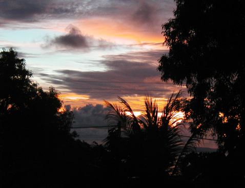
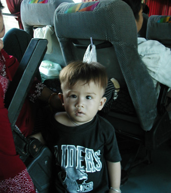
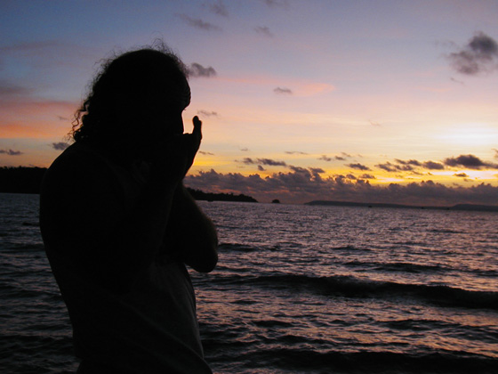

Cambodia Trav-E-Logs©
| Sihanoukville
sent 11 May 2003 |
 |
| back: Phnom Penh | Sunset over the Gulf of Thailand |
================================= I’m holding up, my laptop’s holding up, and I haven’t been held up. What more could anyone want? Hope you’re all enjoying life. =================================
May 3, 2003
 Sihanoukville (Cambodia) bound. Early wake up to be out the door by 6:30 with full pack. Pay for my lodging, where they offer to take me to the bus station, leaving in just 10 minutes from now with another backpacker. I decline, knowing I have yet to purchase a ticket for the early bus leaving at 7:30. The hike takes less than 10 minutes, and I wait in front of the window labeled "Sihanoukville". "Next bus with space is 8:30" I'm told. Just then a coordinator comes over and says one seat available on the bus leaving right now. The round trip price is $5.50. I hop aboard as the bus leaves - it's 7:00 and all schedules that I've seen said the first bus leaves at 7:30. Maybe Saturday is different? At any rate, photo shows Raiders fans can be found anywhere.
It only takes 20 minutes for the bus to truly leave the outskirts of Phnom Penh from the central market area where the bus station is located. Everyone on the big bus is assigned a seat, and I’m all the way in the back. Air conditioned, but not overly so. Surprising to see the bus pay tolls on this two-lane road labeled “highway 4”. Outside, the countryside is flat and featureless. Throughout much of the ride, you can see miles to either side of the highway; nothing but brush, trees, small, still-dry rice fields, farm plots, and some palm trees. A pit has been dug between the road and most of the dwellings. I wonder if this is for sanitation – or possibly has something to do with the rainy season. In many cases these pits collect trash, and it is somewhat of an eyesore. Two hours later, we make a breakfast stop, just before the road starts to pass through a valley with small mountains to either side. These must be the Elephant and Cardamon Mountains. As we approach the coast, the road drops several hundred feet. It’s an uneventful trip. At the first stop, a Swiss backpacker gets off the bus and the driver pulls her bicycle out from underneath. She’s riding to Thailand via Koh Kong -- with a full backpack.
The bus eventually pulls into a large parking area and everyone gets off. I know it is several miles to Victory Beach -- a common backpacker hangout. The first tout wants to charge $5 for a “moto”. I counter with 100 riel ($0.03). Neither believes the other. I walk away from the crowd. One clean-cut gentleman follows in a non-threatening manner, and says okay $1. He is pleasant and easy to understand. We agree on 2000 riel, ($0.50) for the motorbike ride. I still need to get a picture of me with full pack, waist sack, and day sack riding on the back of a motorbike, holding on for dear life when accelerating up a hill.
He wants to take me to the Christmas Guesthouse, in stead of the three I have suggested from the Lonely Planet. Says he’ll drive me to any of the others if I don’t like. I’m leery, but agree. Up and down hills, the most I’ve seen in Cambodia we go towards Victory Beach. The room at the guesthouse is big, bright, and airy, with a huge screened window, fan, and power outlet. All for $3 a night. Two of the three other guesthouses are within view, but there is no reason to check them out. I thank my driver and pay him. He will get a kickback from the guesthouse, as that is how business is done in Cambodia. Actually, that is probably true throughout much of the world.
For the next couple of days I chill out, walk the beach, and check for snorkeling and trekking trips. Most trips require 6 or more people, and I haven’t been able to find more than four people interested in any of the trips. With the major threat of land mines in central and northern Cambodia, the jungle trekking option does not sound prudent before I leave Cambodia. Now I hear that land minds have been found in this southern area as well. “Only two, and they were all rusty and did not work.” The islands 5 miles or so off shore have coral, but it has been dynamited, so few colors, few fish. The trips further off shore are rumored to be better, but these are two-day trips as it takes 4 or more hours to reach them. Then they say it's not as good as Thailand, and I really wonder, because the places I've visited in Thailand were not very good. Normally these trips are organized as diving trips, and end up costing several hundred dollars. In any case, it would still be a gamble with the present rain and sea conditions, so most backpackers are not interested. Not much to take pictures of either, except the fantastic sunsets every evening. Even the food here has been dry, overcooked, and tough. Yesterday I ordered stuffed squid, thinking of mouthwatering morsels with that slightly chewy texture and subtle taste. In reality it was like eating leather, overcooked, improperly prepared, and deep-fried to boot! This is only a location for sunning on the beach, and that is not my style.
My mind is not working overtime with new sights and sounds here -- just crying babies and barking dogs around the neighborhood. Watched a can and bottle collector’s reaction to an annoying, barking dog. She set her bag down, took an 8-foot switch, wound up and struck the dog, sending it tumbling and yelping. It could hardly recover, limping badly to the side of the street.
It’s time to return to Phnom Penh.
Bill
------------------------------"Travel is Fatal to Bigotry, Prejudice, and Narrow-minded ness" .... attributed to Mark Twain
| next: Ho Chi Minh |
| back: Phnom Penh |